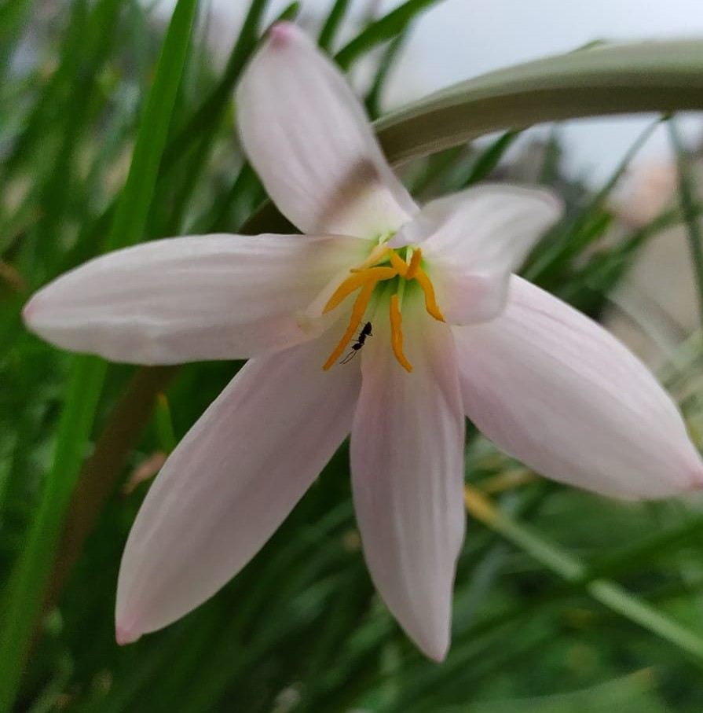

Rain Lily
Zephyranthes is a genus of temperate and tropical plants in the Amaryllis family, subfamily Amaryllidoideae,[4] native to the Western Hemisphere and widely cultivated as ornamentals. There are over 70 recognized species, as well as numerous hybrids and cultivars. Common names for species in this genus include fairy lily, rainflower, zephyr lily, magic lily, Atamasco lily, and rain lily. The name is derived from (Zephyrus), the Greek god of the west wind, and ἄνθος (anthos), meaning flower, referring to the slender stalks.
Rain Lily
Why FlowerInfo ?
Why we're different?
- Believe in doing our work with honesty.
- Make sure optimized information should reach to you all.
- Serve for the betterment of customers.
- Focus on enhancing knowledge.
- Our website is an encyclopedia.

What Clients Say
FlowerInfo is really an amazing website it contains various facts and figures which can help you to enlighten you half knowledge.

Sheissuru
Co-founder at FlowerCare
FlowerInfo is awesome,i've been using this site for so long while gathering informtion to make new projects.

Ericson
Director at writometer

Follow Flowerinfo on our social media to stay tuned with us.Thank you!
CONTACT US
 Near Nakshatravan,Ranchi
Near Nakshatravan,Ranchi
 +0651 2460366
+0651 2460366
 flowerinfo@gmail.com
flowerinfo@gmail.com
Website Created by Sheissuru